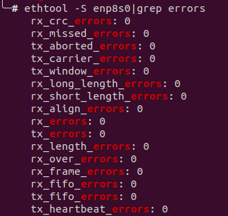
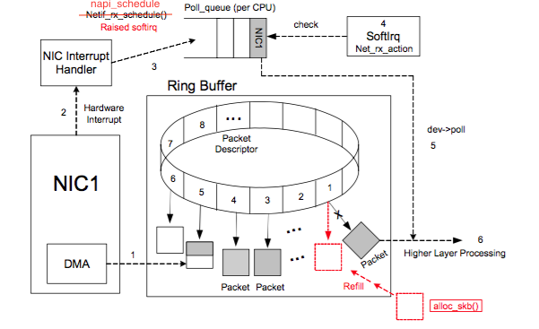

遇到一个服务器丢包的问题, 前场提供的情况类似下图：

只不过 rx_missed_errors 和 rx_fifo_errors 数目巨大. 测试给我发了张 ping 的数据, 80ms 左右. 这是一套负载均衡系统, 另一台服务器的 ping 零点几 ms. 两台服务器一模一样.
拿到这些信息后, 先看 rx_missed_errors 什么意思, 根据 https://unix.stackexchange.com/questions/205141/what-exactly-is-an-ifconfig-dropped-rx-packet , 可能的原因有以下几个

ring buffer 满了之后有两种处理方式, 覆盖老的数据, 或者丢掉新的数据, NIC 显然是将新的包扔掉.
登录客户服务器, 查看有问题的那台服务器的数据, 业务进程 CPU 占用率是另一台的 10 倍以上, softirq 40%, 说明大量流量进入 NIC, NIC 发出大量硬件中断, 继而触发更多软中断. 最后推测是高可用性负载均衡模块出了问题, 问题设备承担过多负担.
通过 top 看到设备有 4 核, 但只有 2 核工作, cat /proc/irq/*/smp_affinity 看到大量 f, 强行将网卡的多个队列绑定到特定 CPU, 再看设备的丢包数（通过 ethtool -S 或 ifconfig) 和 ping 延迟, 已经有改善, 对方接受这个结果, 这事就告一段落.